惠普laser mfp 115w自带无线功能，可以在手机搜索到打印机的WLAN热点。
手机里必须要下载这两个Application
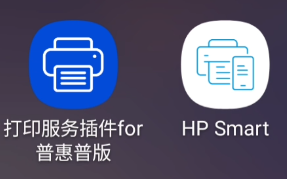
打开软件“HP Smart”，“打印服务插件for惠普普版”可以先不理，“打印服务插件for惠普普版”的任务就是下载打印服务在Android手机里。
进入界面点击“添加打印机”
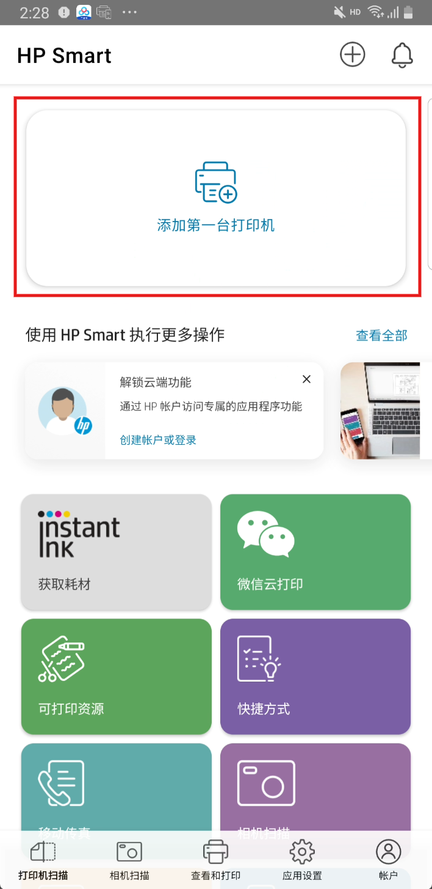
然后有两个选项，点击第二个，“已连接到网络”
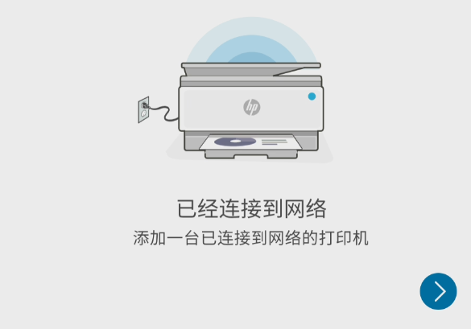
点击以后可以看到打印机名字出来了，叫HP Laser MFP 115w
点击它
如果没有打印机名字的，看首页第二个方案。
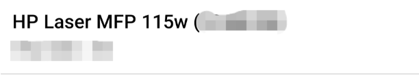
点后效果
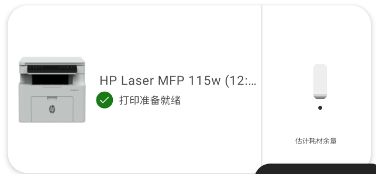
连上了！
打开官方的Microsoft store，搜索"HP Smart"
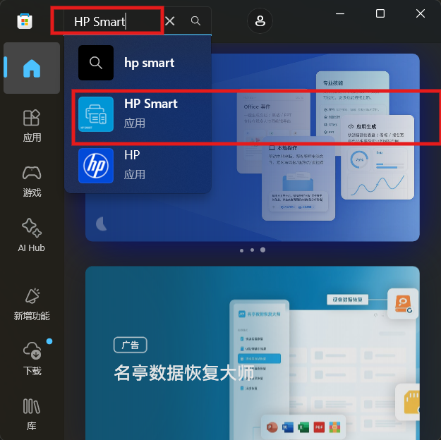
点击下载
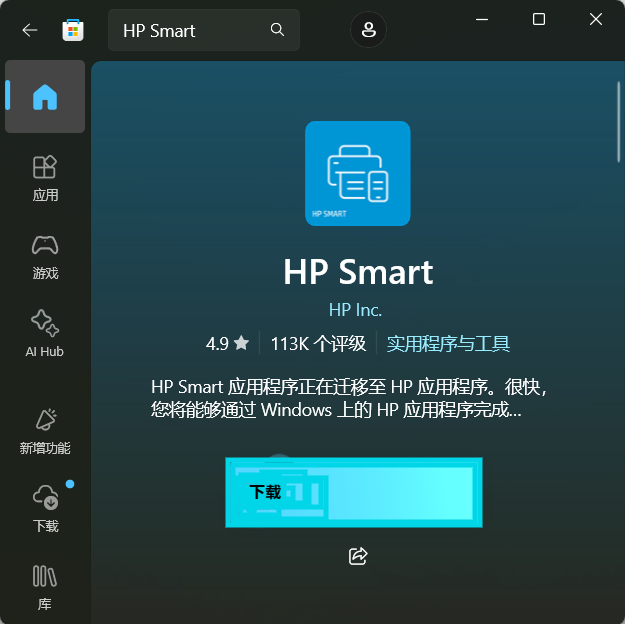
打开软件
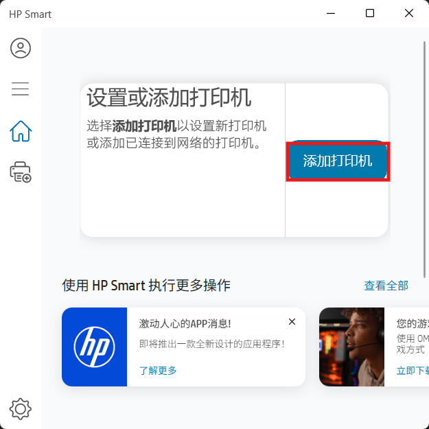
点击你的打印机
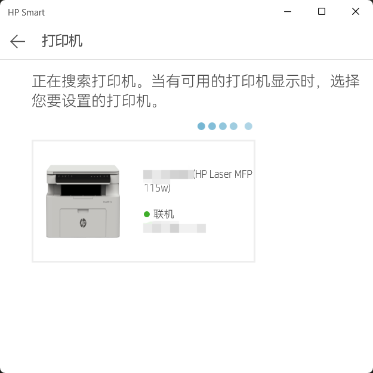
按要求打开设置，点击添加设备，我添加完了，正常这里有一个打印机设备
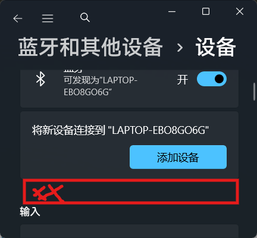
然后完成！
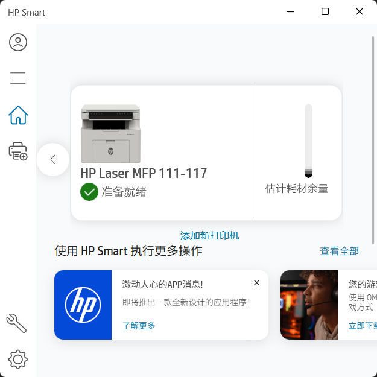